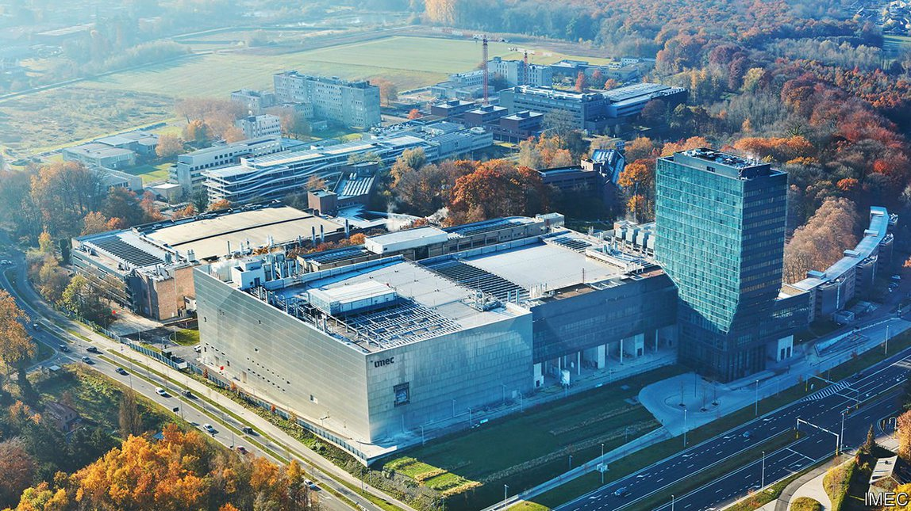
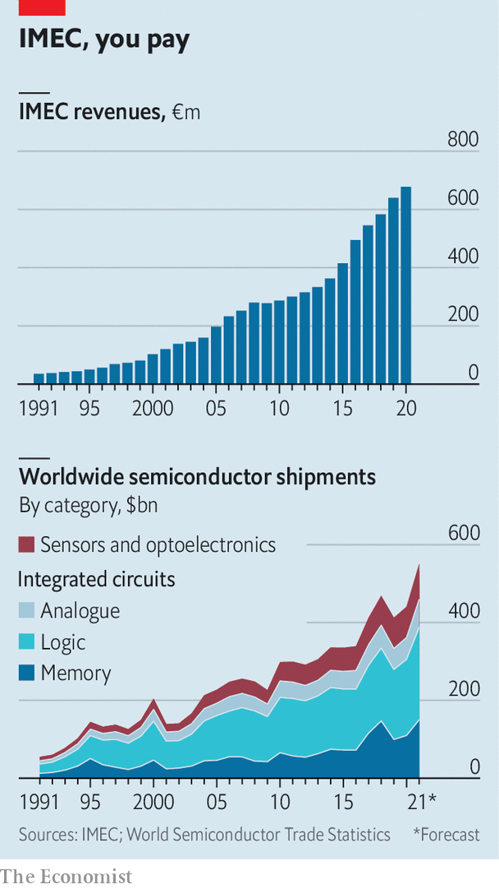
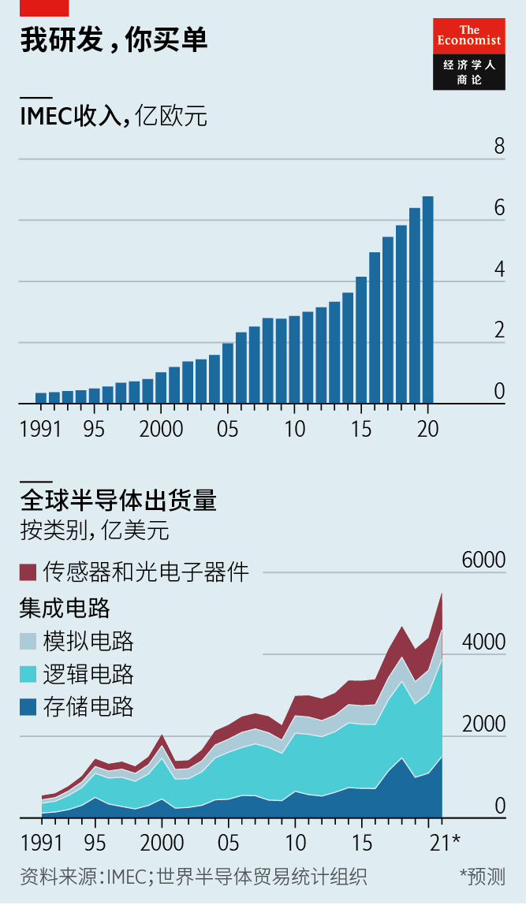

2021-10-12T14:20:03+00:00
Neutral but not idle
中立但忙碌
中立但忙碌
IMEC offers neutral ground amid chip rivalries
在芯片对抗中，IMEC提供了中立地带
在芯片對抗中，IMEC提供了中立地帶
The brain trust at the heart of the $550bn semiconductor industry
这个智库位居价值5500亿美元的半导体产业的核心
這個智庫位居價值5500億美元的半導體產業的核心
LEUVEN IS PERHAPS best known to the general public as the birth place of Stella Artois. Among chipmakers the Belgian city’s biggest claim to fame sits in a squat building not far from the Leuven Institute for Beer Research. Metal banding lends its facade the glittering look of a silicon wafer etched with microcircuitry. Inside, its lower floors hum with the noise of $3bn-worth of some of the most complex equipment humanity has ever devised. The offices above house hundreds of the planet’s keenest semiconductor engineers dreaming up the future of chipmaking.
鲁汶最为世人所熟知的可能是它是时代啤酒（Stella Artois）的起源地。而在芯片制造商的圈子里，这座比利时城市最有名的地方是距鲁汶啤酒研究所（Leuven Institute for Beer Research）不远处的一栋低矮宽阔的建筑。金属镶嵌的外墙让它看上去像蚀刻了微型电路的硅片一样闪闪发光。走入其中，底下几层回荡着嗡嗡声，这声响由一批总价约30亿美元的机器发出，它们是人类发明的其中一批最复杂的设备。上层的办公室里聚集着几百名世界上最有干劲的半导体工程师，他们在这里构想着芯片制造的未来。
魯汶最為世人所熟知的可能是它是時代啤酒（Stella Artois）的起源地。而在芯片製造商的圈子裡，這座比利時城市最有名的地方是距魯汶啤酒研究所（Leuven Institute for Beer Research）不遠處的一棟低矮寬闊的建築。金屬鑲嵌的外牆讓它看上去像蝕刻了微型電路的硅片一樣閃閃發光。走入其中，底下幾層回蕩着嗡嗡聲，這聲響由一批總價約30億美元的機器發出，它們是人類發明的其中一批最複雜的設備。上層的辦公室里聚集着幾百名世界上最有幹勁的半導體工程師，他們在這裡構想着芯片製造的未來。
The building (pictured) is the headquarters of the Interuniversity Microelectronics Centre. IMEC, as it is better known, does not design chips (like America’s Intel), manufacture them (like TSMC of Taiwan) or make any of the complicated gear in its basement (like ASML, a Dutch firm). Instead, it creates knowledge used by everyone in the $550bn chip business. Given chips’ centrality to the modern economy—highlighted by the havoc wrought by current shortages—and increasingly to modern geopolitics, too, that makes it one of the most essential industrial research-and-development (R&D) centres on the planet. Luc Van den hove, IMEC’s boss, calls it the “Switzerland of semiconductors”.
这座建筑（如图）是微电子研究中心（Interuniversity Microelectronics Centre）的总部。该研究中心通常被称为IMEC，它并不设计芯片（如美国的英特尔）或制造芯片（如台湾的台积电），也不生产它地下楼层里的那些复杂设备（如荷兰的ASML）。但它创造出来的知识被5500亿美元的芯片产业中的每个人所使用。鉴于芯片在现代经济中的核心作用——当前芯片短缺造成的混乱突显了这一点——以及在现代地缘政治中日益关键的影响力，IMEC的这一功能让它成为了世界上最重要的工业研发中心之一。IMEC的老板吕克·范登霍夫（Luc Van den hove）称它为“半导体界的瑞士”。
這座建築（如圖）是微電子研究中心（Interuniversity Microelectronics Centre）的總部。該研究中心通常被稱為IMEC，它並不設計芯片（如美國的英特爾）或製造芯片（如台灣的台積電），也不生產它地下樓層里的那些複雜設備（如荷蘭的ASML）。但它創造出來的知識被5500億美元的芯片產業中的每個人所使用。鑒於芯片在現代經濟中的核心作用——當前芯片短缺造成的混亂突顯了這一點——以及在現代地緣政治中日益關鍵的影響力，IMEC的這一功能讓它成為了世界上最重要的工業研發中心之一。IMEC的老闆呂克·范登霍夫（Luc Van den hove）稱它為“半導體界的瑞士”。
IMEC was founded in 1984 by a group of electronics engineers from the Catholic University of Leuven who wanted to focus on microprocessor research. In the early days it was bankrolled by the local Flemish government. Today IMEC maintains its neutrality thanks to a financial model in which no single firm or state controls a big share of its budget. The largest chunk comes from the Belgian government, which chips in some 16%. The top corporate contributors provide no more than 4% each. Keeping revenue sources diverse (partners span the length and breadth of the chip industry) and finite (its standard research contracts last three to five years) gives IMEC the incentive to focus on ideas that help advance chipmaking as a whole rather than any firm in particular.
IMEC成立于1984年，由一群来自天主教鲁汶大学（Catholic University of Leuven）、希望专注于微处理器研究的电子工程师创办。它在早期得到了弗拉芒地方政府的资助。今天的IMEC保持中立地位，靠的是没有任何一个公司或国家在其预算中占到大头的财务模式。它最大的一笔预算来自比利时政府，约占16%。排名前列的出资企业里每一家的份额都不超过4%。保持收入来源的多元（其合作伙伴遍及芯片业的各个环节）和时效性（其研究合同通常为期三至五年）激励着IMEC专注于那些能推动整个行业而非任何特定公司的创意。
IMEC成立於1984年，由一群來自天主教魯汶大學（Catholic University of Leuven）、希望專註於微處理器研究的電子工程師創辦。它在早期得到了弗拉芒地方政府的資助。今天的IMEC保持中立地位，靠的是沒有任何一個公司或國家在其預算中佔到大頭的財務模式。它最大的一筆預算來自比利時政府，約佔16%。排名前列的出資企業里每一家的份額都不超過4%。保持收入來源的多元（其合作夥伴遍及芯片業的各個環節）和時效性（其研究合同通常為期三至五年）激勵着IMEC專註於那些能推動整個行業而非任何特定公司的創意。
A case in point is the development of extreme ultraviolet lithography (EUV). EUV is a delicate process involving high-powered lasers, molten tin and ultra-smooth mirrors. The bus-sized machines that generate EUV are today all made by ASML and used by TSMC and Samsung, a South Korean chipmaker. It took 20 years of R&D to turn the idea into manufacturing reality. IMEC acted as a conduit in that process. That is because EUV must work seamlessly with kit made by other firms. Advanced toolmakers want a way to circulate their intellectual property (IP) without the large companies gaining sway over it. The large companies, meanwhile, do not want to place all their bets on any one experimental idea that is expensive (as chipmaking processes are) and could become obsolete.
极紫外光刻（EUV）的研发就是个很好的例子。EUV是一项涉及高功率激光器、熔锡和超光洁镜面的精密工艺。和一辆巴士差不多大小的EUV光刻机目前都由ASML制造，再提供给台积电和韩国芯片制造商三星使用。从想法到实际投产，其间的研发花了20年时间。而在这个过程中，IMEC起到了中间桥梁的作用。这是因为EUV必须与其他公司生产的设备实现无缝对接。领先的设备制造商希望能让自己的知识产权在不受大公司控制的情况下流通。与此同时，大公司也不想把所有赌注都押在任何一个投入巨大（芯片制造工艺就是这样）且可能会过时的试验性想法上。
極紫外光刻（EUV）的研發就是個很好的例子。EUV是一項涉及高功率激光器、熔錫和超光潔鏡面的精密工藝。和一輛巴士差不多大小的EUV光刻機目前都由ASML製造，再提供給台積電和韓國芯片製造商三星使用。從想法到實際投產，其間的研發花了20年時間。而在這個過程中，IMEC起到了中間橋樑的作用。這是因為EUV必須與其他公司生產的設備實現無縫對接。領先的設備製造商希望能讓自己的知識產權在不受大公司控制的情況下流通。與此同時，大公司也不想把所有賭注都押在任何一個投入巨大（芯片製造工藝就是這樣）且可能會過時的試驗性想法上。
IMEC’s neutrality allows both sides to get around this problem. It collects all the necessary gear in one place, allowing producers to develop their technology in tandem with others. And everyone gets rights to the IP the institute generates. Mr Van den hove says that progress in the chip industry has been driven by the free exchange of knowledge, with IMEC acting as a “funnel” for ideas from all over the world.
IMEC的中立性让双方的问题迎刃而解。它将所有必要的设备集中在一起，便于生产商与他人协同开发技术。各方都能享用IMEC的知识产权。范登霍夫表示，芯片行业的进步是由知识的自由交流推动的，IMEC在其中充当了一个汇聚全世界各种想法的“漏斗”。
IMEC的中立性讓雙方的問題迎刃而解。它將所有必要的設備集中在一起，便於生產商與他人協同開發技術。各方都能享用IMEC的知識產權。范登霍夫表示，芯片行業的進步是由知識的自由交流推動的，IMEC在其中充當了一個匯聚全世界各種想法的“漏斗”。
This model has lured ever more contributors. Today “several hundred” are active at IMEC at any one time, the institute says. They range from startups to the stars of the chipmaking firmament, from ASML to TSMC. Pat Gelsinger, Intel’s newish boss, is effusive in his praise for the outfit. Even as their number has grown, individual partners have also become more generous, in part to keep pace with the rising price of all the chipmaking equipment that IMEC must procure (even if it gets a lot of it from collaborators at reduced rates). As a result, IMEC’s revenues, which come from the research contracts and from prototyping and design services, doubled between 2010 and 2020, to €678m ($773m). Its annual takings are already on the order of those of giant charities such as the Ford Foundation or the American Cancer Society, and growing roughly in line with the booming chip business (see chart).
这种模式吸引了越来越多的参与者。IMEC表示，如今，任何时候都有“几百家”参与者活跃其中——从创业公司到芯片制造领域的明星企业，包括ASML和台积电等。英特尔新任老板帕特·盖尔辛格（Pat Gelsinger）对IMEC不吝赞美。不仅参与者的数量增加了，单个合作伙伴出手也更大方了，某种程度上是为了跟上设备涨价的步伐，好让IMEC能购置它所必需的所有芯片制造设备（即使它从合作伙伴那里以折扣价获得了大量设备）。因此，IMEC的收入——来自研究合同、样机制造和设计服务——在2010年至2020年间翻了一番，达到6.78亿欧元（7.73亿美元）。它的年度收入已经接近于福特基金会（Ford Foundation）和美国癌症协会（American Cancer Society）等大型慈善机构，并与蓬勃发展的芯片行业大致保持同步增长（见图表）。
這種模式吸引了越來越多的參與者。IMEC表示，如今，任何時候都有“幾百家”參與者活躍其中——從創業公司到芯片製造領域的明星企業，包括ASML和台積電等。英特爾新任老闆帕特·蓋爾辛格（Pat Gelsinger）對IMEC不吝讚美。不僅參與者的數量增加了，單個合作夥伴出手也更大方了，某種程度上是為了跟上設備漲價的步伐，好讓IMEC能購置它所必需的所有芯片製造設備（即使它從合作夥伴那裡以折扣價獲得了大量設備）。因此，IMEC的收入——來自研究合同、樣機製造和設計服務——在2010年至2020年間翻了一番，達到6.78億歐元（7.73億美元）。它的年度收入已經接近於福特基金會（Ford Foundation）和美國癌症協會（American Cancer Society）等大型慈善機構，並與蓬勃發展的芯片行業大致保持同步增長（見圖表）。
The deepening rift between America, home to some of the industry’s biggest firms, and China, which imported $378bn-worth of chips last year, threatens IMEC’s spirit of global comity. China’s chip industry is increasingly shielded by an overbearing Communist Party striving for self-sufficiency, and ever more ostracised by outsiders as a result of American and European export controls. All this limits the extent to which IMEC can work with Chinese semiconductor companies.
美国拥有业内最大的一些公司，而中国去年进口了价值3780亿美元的芯片，这两个国家之间日益加深的裂痕危及到了IMEC秉承的全球友好精神。中国的芯片业因专横的共产党力求自给自足而获得越来越多保护，同时又因美欧的出口管制而日益被外部世界排挤。所有这些都限制了IMEC与中国的半导体公司可能开展的合作。
美國擁有業內最大的一些公司，而中國去年進口了價值3780億美元的芯片，這兩個國家之間日益加深的裂痕危及到了IMEC秉承的全球友好精神。中國的芯片業因專橫的共產黨力求自給自足而獲得越來越多保護，同時又因美歐的出口管制而日益被外部世界排擠。所有這些都限制了IMEC與中國的半導體公司可能開展的合作。
It is a matter of public record that IMEC has worked with Chinese firms in the past, including Huawei, a telecoms-gear giant with a chip division that has been hobbled by American sanctions, and SMIC, China’s biggest chipmaker. Chinese make up 3.5% of people working at IMEC, the fifth-largest group and ahead of Americans at 1.5%. IMEC has a unit in Shanghai. Still, no Chinese tools are visible in its basement. IMEC would not comment on individual partnerships but says it has “a few engagements with Chinese companies, however not on the most sensitive technologies, and always fully compliant with current European and US export regulations and directives”. Mr Van den hove adds that IMEC has no “major partnerships” with up-and-coming Chinese toolmakers.
众所周知，IMEC曾与中国公司合作过，包括电信设备巨头华为（它的芯片部门因美国制裁而步履艰难）和中国最大的芯片制造商中芯国际。中国人是IMEC员工中的第五大群体，占总人数的3.5%，高于美国人的1.5%。IMEC在上海设有一家分公司。不过，在它总部的地下部分看不到中国的芯片制造设备。IMEC不愿就某一个合作关系置评，但它表示自己“与中国企业有一些合作，但不是在最敏感的技术上，并且一直完全遵守欧美当前的出口法规和指令”。范登霍夫补充说，IMEC与新冒头的中国芯片设备制造商没有“重大合作”。
眾所周知，IMEC曾與中國公司合作過，包括電信設備巨頭華為（它的芯片部門因美國制裁而步履艱難）和中國最大的芯片製造商中芯國際。中國人是IMEC員工中的第五大群體，佔總人數的3.5%，高於美國人的1.5%。IMEC在上海設有一家分公司。不過，在它總部的地下部分看不到中國的芯片製造設備。IMEC不願就某一個合作關係置評，但它表示自己“與中國企業有一些合作，但不是在最敏感的技術上，並且一直完全遵守歐美當前的出口法規和指令”。范登霍夫補充說，IMEC與新冒頭的中國芯片設備製造商沒有“重大合作”。
Less chipmaking know-how flowing to China and less streaming out of it means that Chinese engineers’ ideas can no longer be integrated with the global technology base of which IMEC is the custodian. There is little that IMEC can do about the growing distance between the Western and Chinese techno-spheres. So it is focusing instead on what it does best: pushing the cutting-edge of chip manufacturing.
外部的芯片制造经验难以流入中国，中国的经验也更少流出，这意味着中国工程师的创意无法再与IMEC所管理的全球技术基地接轨。对于西方和中国的技术圈之间日益扩大的隔阂，IMEC无能为力。因此，它转而专注于自己最擅长的领域：推进芯片制造的前沿。
外部的芯片製造經驗難以流入中國，中國的經驗也更少流出，這意味着中國工程師的創意無法再與IMEC所管理的全球技術基地接軌。對於西方和中國的技術圈之間日益擴大的隔閡，IMEC無能為力。因此，它轉而專註於自己最擅長的領域：推進芯片製造的前沿。
A hulking machine made by SUSS MicroTec, a German firm, scans chips to create a 3D image so that multiple processors can be aligned and affixed—fiddly business at nanometre scales. Elsewhere in the building Peter Peumans, who runs IMEC’s health-tech portfolio, hands over a prototype developed during the pandemic that uses a custom silicon chip to cut DNA-sequencing times from hours to minutes. Xavier Rottenberg is developing semiconductor-based ultrasound sensors that can be printed out using the technology to make flat-screen TVs, which may lead to scanners much larger than today’s handheld ones and able to capture the whole body at once at a higher resolution. Such work keeps IMEC’s neutral ideas factory awhir. Maintaining Swiss-like neutrality in chip geopolitics will be tougher. ■
德国公司SUSS MicroTec制造了一台庞大的机器，能扫描芯片生成3D图像，这样就可以把多个处理器对齐固定——这是纳米级的高精度作业。在大楼内的另一处，IMEC的健康技术系列主管彼得·珀曼斯（Peter Peumans）移交了一个在新冠疫情期间研发的样机，它使用的定制芯片把DNA测序时间从几小时缩短到了几分钟。泽维尔·罗滕伯格（Xavier Rottenberg）正在开发一款基于半导体的超声波传感器，可以用制造平板电视的技术印制出来，由此可能会造出比今天的手持式扫描仪大得多的扫描仪，能以更高的分辨率一次性把整个人体扫描下来。这样的研究让IMEC这个中立的“点子工厂”呈现出一派繁忙景象，但要在芯片地缘政治中保持瑞士式的中立将会更加困难。
德國公司SUSS MicroTec製造了一台龐大的機器，能掃描芯片生成3D圖像，這樣就可以把多個處理器對齊固定——這是納米級的高精度作業。在大樓內的另一處，IMEC的健康技術系列主管彼得·珀曼斯（Peter Peumans）移交了一個在新冠疫情期間研發的樣機，它使用的定製芯片把DNA測序時間從幾小時縮短到了幾分鐘。澤維爾·羅滕伯格（Xavier Rottenberg）正在開發一款基於半導體的超聲波傳感器，可以用製造平板電視的技術印製出來，由此可能會造出比今天的手持式掃描儀大得多的掃描儀，能以更高的分辨率一次性把整個人體掃描下來。這樣的研究讓IMEC這個中立的“點子工廠”呈現出一派繁忙景象，但要在芯片地緣政治中保持瑞士式的中立將會更加困難。